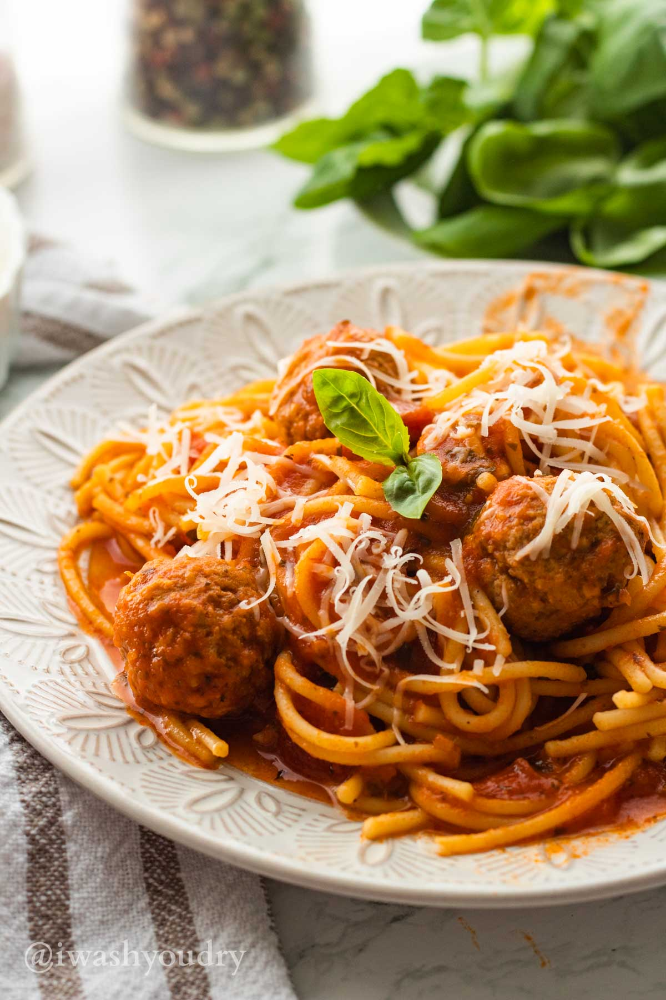
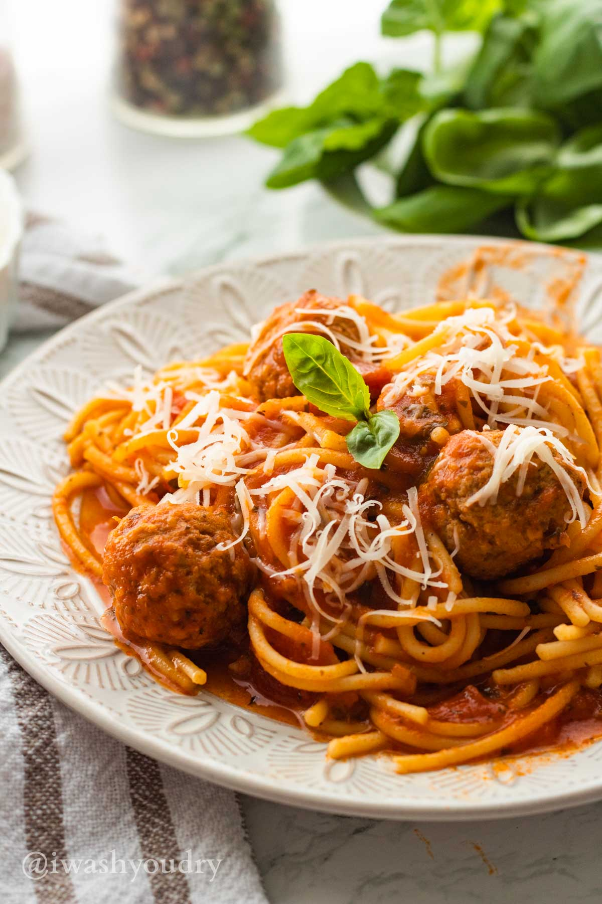
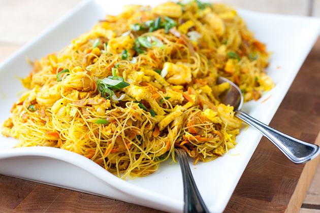
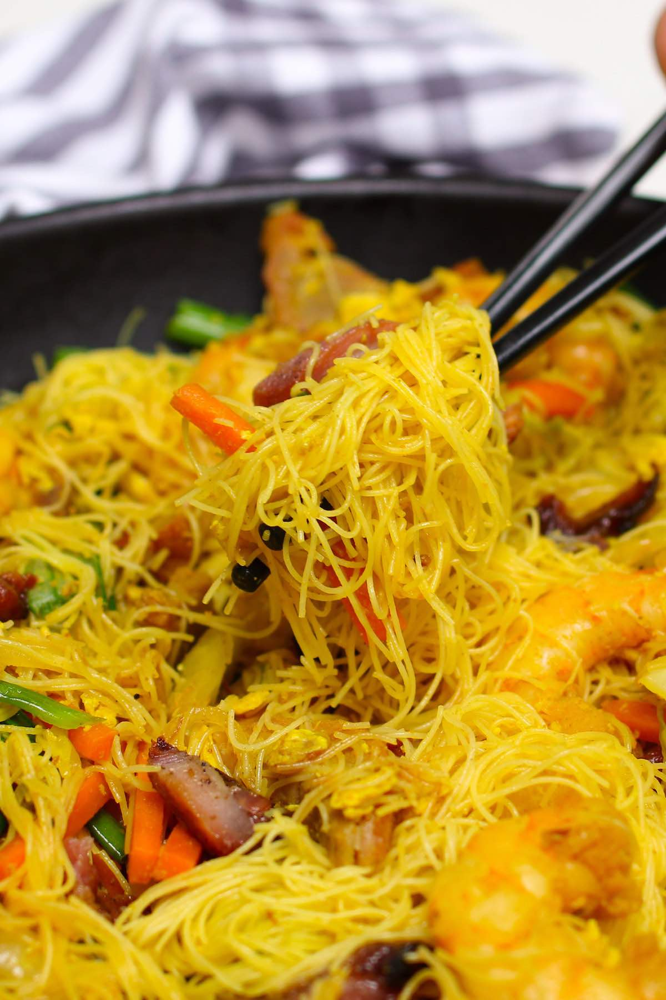
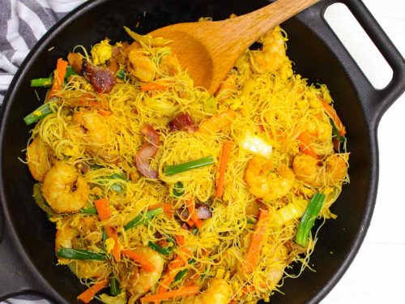
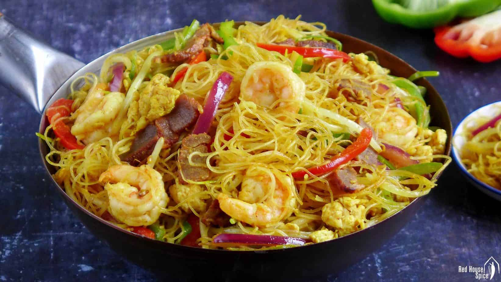
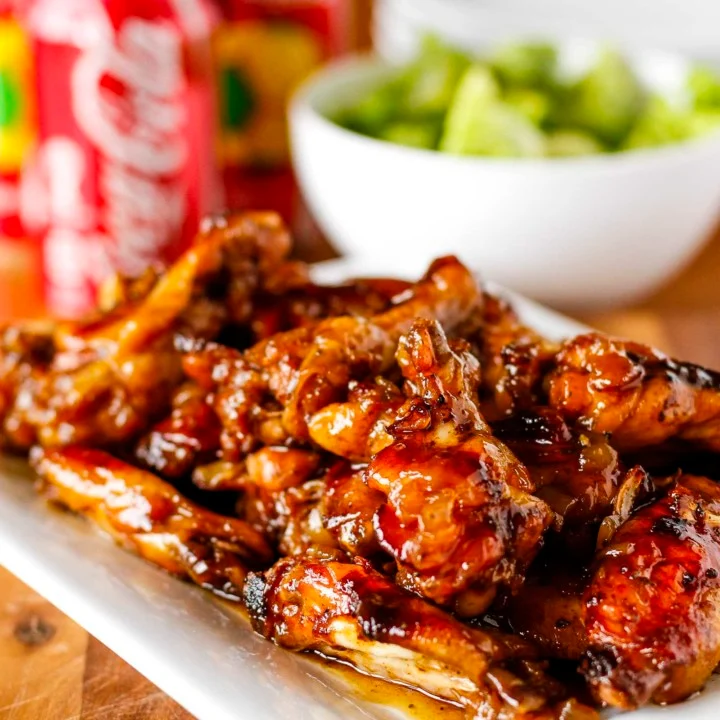
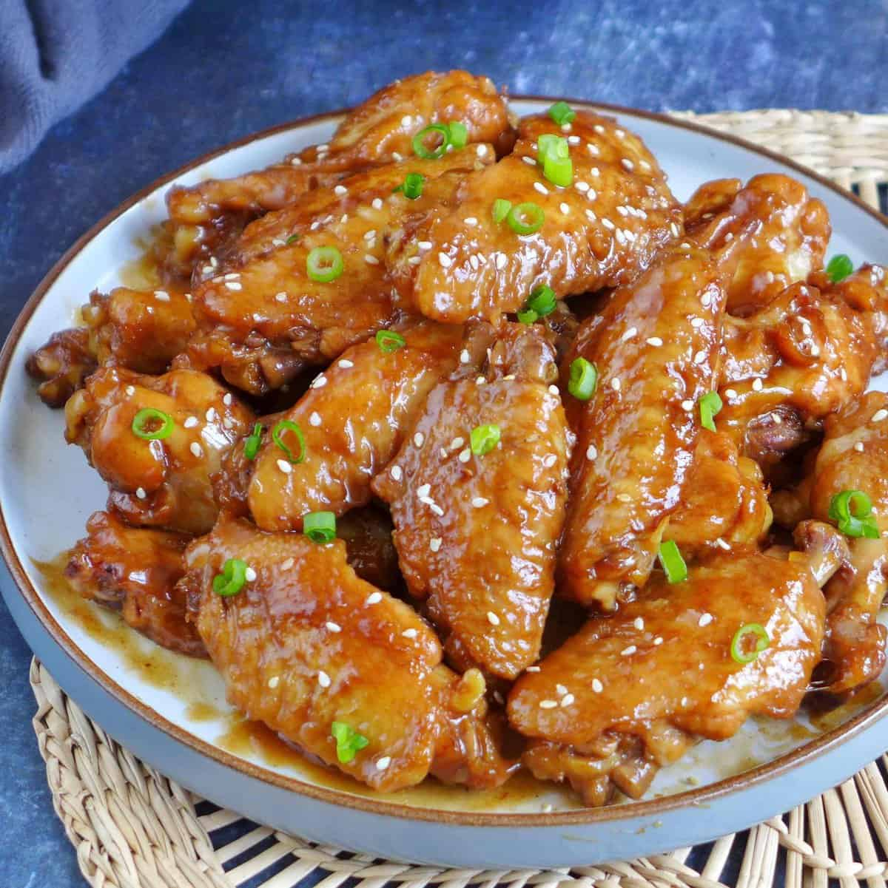

Recipes
Descriptive text is generated by ChatGPT.
Spaghetti and Meatballs

Recipe Ingredients
Ingredients for Meatballs
- 1 pound ground beef
- 1/2 cup breadcrumbs
- 1/4 cup grated Parmesan cheese
- 1/4 cup chopped fresh parsley
- 1/4 cup chopped onion
- 1 clove garlic, minced
- 1/4 cup milk
- 1/4 cup ketchup
- 1 egg
- 1/2 teaspoon salt
- 1/4 teaspoon black pepper
- Olive oil for frying
Ingredients for The Sauce
- 1 can (28 ounces) crushed tomatoes
- 1 can (14 ounces) diced tomatoes
- 2 cloves garlic, minced
- 1/4 cup chopped onion
- 1 teaspoon dried oregano
- 1 teaspoon dried basil
- Salt and pepper to taste
Ingredients for Serving
- 8 ounces spaghetti
- Grated Parmesan cheese
- Chopped fresh basil or parsley for garnish
Recipe Steps
The Steps of Making Meatballs
- In a large bowl, combine everything that is mentioend above.
- Mix the ingredients until well combined, but avoid overmixing which can make the meatballs tough.
- Shape the mixture into golf ball-sized meatballs.
- Heat a frying pan over medium heat and add a generous drizzle of olive oil.
- Add the meatballs to the pan, being careful not to overcrowd. Cook them in batches if necessary.
- Brown the meatballs on all sides until they are cooked through (about 10-12 minutes). Set them aside.
The Steps of Making Sauce
- In a large pot, combine crushed tomatoes, diced tomatoes, minced garlic, chopped onion, dried oregano, dried basil, sugar (if using), salt, and pepper. Stir to combine.
- Simmer the sauce over low heat for about 20-30 minutes, stirring occasionally.
The Steps of Making Spaghetti and Meatballs
- Bring a large pot of salted water to a boil. Add the spaghetti and cook according to package instructions until al dente. Drain.
- Add the meatballs to the sauce and let them simmer together for an additional 10-15 minutes.
- Serve the meatballs and sauce over cooked spaghetti. Top with grated Parmesan cheese and chopped basil or parsley.
Photo Gallery

 

Singapore Mei Fun
Recipe Ingredients
Ingredients for Mei Fun
- 8 ounces thin rice noodles
- 2 tablespoons vegetable oil
- 2 eggs, lightly beaten
- 1/2 pound boneless chicken breast, thinly sliced
- 1/2 cup julienned carrots
- 1/2 cup thinly sliced bell peppers (red or green)
- 1/2 cup sliced scallions (green onions)
- 1/2 cup bean sprouts
Ingredients for The Sauce
- 2 tablespoons soy sauce
- 1 tablespoon curry powder
- 1 tablespoon oyster sauce
- 1 tablespoon sugar
- 1/2 teaspoon salt
- 1/4 cup chicken or vegetable broth
Recipe Steps
Steps for Singapore Mei Fun
- Place the rice noodles in a large bowl and cover them with hot water. Let them soak for about 8-10 minutes until they are pliable.
- Whisk together the all the ingredients for sauce in a small bowl. Set the sauce aside.
- Heat 1 tablespoon of oil in a large skillet or wok over medium-high heat.
- Add the eggs and scramble them until they are cooked through. Transfer the eggs to a plate and set them aside.
- In the same wok or skillet, add another tablespoon of oil.
- Add the sliced chicken and cook until it is no longer pink. If using shrimp, add them at this stage and cook until they turn pink and opaque.
- Add the julienned carrots, bell peppers, and sliced scallions. Stir-fry for about 2-3 minutes until the vegetables are slightly tender but still crisp.
- Add the soaked and drained rice noodles to the wok or skillet. Pour the prepared sauce over the noodles and toss everything together until the noodles are well-coated with the sauce.
- Add the bean sprouts and scrambled eggs back into the wok. Toss everything together to combine and heat through.
Photo Gallery
  Coca Cola Chicken

Recipe Ingredients
Ingredients for The Chicken
- 1 pound boneless, skinless chicken thighs or breasts, cut into bite-sized pieces
- 2 tablespoons vegetable oil
- Salt and pepper to taste
Ingredients for The Sauce
- 1 cup Coca-Cola (not diet)
- 1/4 cup soy sauce
- 2 tablespoons ketchup
- 2 tablespoons hoisin sauce
- 2 cloves garlic, minced
- 1 teaspoon ginger, grated
Recipe Steps
- If you choose to coat the chicken, toss the bite-sized chicken pieces in flour until lightly coated. Shake off excess flour.
- Heat the vegetable oil in a large skillet or wok over medium-high heat. Add the chicken pieces and cook until they are browned on all sides. This takes about 3-4 minutes per side. Season with salt and pepper. Remove the chicken from the skillet and set aside.
- In the same skillet, add the Coca-Cola, soy sauce, ketchup, hoisin sauce, minced garlic, and grated ginger. Stir to combine.
- Add the cooked chicken back into the skillet with the sauce. Toss everything together until the chicken is well-coated with the sauce.
- Let the chicken simmer in the sauce for an additional 5-7 minutes, or until the chicken is cooked through and the sauce has reduced and thickened (if you added cornstarch).
- Transfer the Coca Cola Chicken to a serving platter. Sprinkle sesame seeds and chopped green onions on top for garnish.
- Serve the Coca Cola Chicken over steamed rice or noodles. Enjoy your delicious meal!
Photo Gallery
 